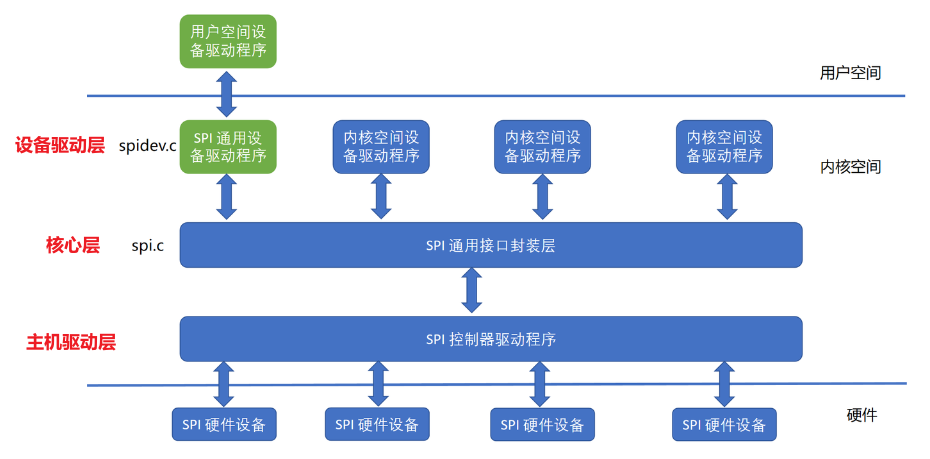

SPI子系统
SPI子系统的架构
Linux内核的SPI子系统同样遵循者”驱动分层”和”主机驱动和设备驱动分离”的理念，它的结构可分为3部分：

- 核心层：由Linux内核提供，为适配器和设备驱动层提供了统一的API，包括注册、注销、传数据等
- 总线驱动层：由芯片原厂负责，主要包括适配器（SoC内的SPI控制器）的配置，以及数据发送/接收函数的定义这2部分
- 设备驱动层：由普通驱动工程师负责，通过核心层提供的通用API，实现对I2C特定波形的发送从而控制具体的设备
核心文件
在Linux内核源代码中的drivers目录下有一个spi目录，而在spi目录下又包含如下文件和文件夹：
spi.c：实现了SPI核心层的通用API以及/proc/bus/spi*接口spidev.c：以字符设备驱动框架将SPI控制器直接封装为字符设备/dev/spi，从而向用户空间提供直接操纵SPI控制器的接口spi-<vendor>.c：各Soc原厂提供的SPI主机驱动，利用platform框架注册
核心数据结构
内核中的include/linux/spi/spi.h定义了几个SPI子系统的核心数据结构
主机驱动层
上面提到了主机驱动层需要完成对SPI控制器的配置以及实现SPI波形信号的发送，其核心数据结构如下：
spi_master
struct spi_master用于描述一个SPI控制器，定义了 SPI控制器的硬件特性、操作方法以及所连接的设备。==每个==物理 SPI 总线在内核中==均对应==一个 spi_master 实例
核心作用：
- 抽象 SPI 控制器硬件：封装控制器的总线编号、支持片选的设备数量、时钟、DMA等信息
- 提供通信方法
1
2
3
4
5
6
7
8
9
10
11
12
13
14
15
16
17
18
19
20
21
22
23
24
25
26
27
28
29
30
31
32
33
34
35
36
37
38
39
40
41
42
43
44
45
46
47
48
49
50
51
52
53
54
55
56
57
58
59
|
struct spi_master {
struct device dev;
s16 bus_num;
u16 num_chipselect;
int (*transfer)(struct spi_device *spi, struct spi_message *mesg);
int (*transfer_one)(struct spi_master *master, struct spi_device *spi, struct spi_transfer *transfer);
int (*transfer_one_message)(struct spi_master *master, struct spi_message *mesg);
bool (*can_dma)(struct spi_master *master, struct spi_device *spi, struct spi_transfer *xfer);
bool dma_tx_aligned;
bool dma_rx_aligned;
bool auto_runtime_pm;
u32 min_speed_hz;
u32 max_speed_hz;
u16 mode_bits;
u32 bits_per_word_mask;
struct kthread_worker *kworker;
struct kthread_work pump_messages;
struct list_head queue;
spinlock_t queue_lock;
bool busy;
bool running;
bool rt;
struct spi_statistics stats;
bool queued;
bool auto_runtime_pm;
bool cur_msg_prepared;
bool cur_msg_mapped;
int (*prepare_transfer_hardware)(struct spi_master *master);
int (*unprepare_transfer_hardware)(struct spi_master *master);
int (*prepare_message)(struct spi_master *master, struct spi_message *message);
int (*unprepare_message)(struct spi_master *master, struct spi_message *message);
int (*slave_abort)(struct spi_master *master);
const struct of_device_id *of_match_table;
acpi_handle acpi_match_data;
void *priv;
};
|
在定义好了SPI控制器后，需要用platform框架注册到内核！
设备驱动层
SPI子系统和platform框架类似，遵循着Linux的设备驱动模型，并实现了驱动和设备的分离。且spi_driver和spi_device也是一对多的关系，即同一份驱动可以创建多个同类型设备（只要匹配的上）
spi_driver
struct spi_driver：类似platfor_driver，它用于管理SPI设备的驱动，定义了驱动如何和SPI设备进行交互，包括probe、remove、与设备匹配等操作
1
2
3
4
5
6
7
8
9
10
11
|
struct spi_driver {
struct device_driver driver;
const struct spi_device_id *id_table;
int (*probe)(struct spi_device *spi);
int (*remove)(struct spi_device *spi);
void (*shutdown)(struct spi_device *spi);
int (*suspend)(struct spi_device *spi, pm_message_t mesg);
int (*resume)(struct spi_device *spi);
const struct of_device_id *of_match_table;
};
|
spi_device
struct spi_device：它是 Linux 内核中表示一个具体的SPI设备 的数据结构，它描述了连接到 SPI总线上的物理设备。每个被内核识别并绑定了驱动的SPI设备都会对应一个 spi_device 实例
1
2
3
4
5
6
7
8
9
10
11
12
13
14
15
16
17
18
19
20
21
22
|
struct spi_device {
struct device dev;
struct spi_master *master;
u32 max_speed_hz;
u8 chip_select;
u8 bits_per_word;
u16 mode;
int irq;
void *controller_data;
void *driver_data;
char modalias[SPI_NAME_SIZE];
int cs_gpio;
struct gpio_desc *cs_gpiod;
u8 cs_gpio_initialized:1;
u8 cs_high:1;
u8 spi_3wire:1;
u8 lsb_first:1;
u8 tx_nbits:3;
u8 rx_nbits:3;
};
|
spi_device依附于spi_master，每个spi_master可以挂多个spi_devicespi_device就和platform_device一样，由内核根据设备树自动创建，不需要人手动创建，创建完成后由总线进行匹配
核心层
spi_transfer
描述==单次== SPI 数据传输的细节（发送、接收或全双工）
1
2
3
4
5
6
7
8
9
10
| struct spi_transfer {
const void *tx_buf;
void *rx_buf;
unsigned len;
u16 delay_usecs;
u8 bits_per_word;
u16 speed_hz;
u8 cs_change:1;
};
|
spi_message
封装==多个== spi_transfer 为一个原子操作（例如：先发命令再读数据）：
1
2
3
4
5
6
| struct spi_message {
struct list_head transfers;
void (*complete)(void *);
void *context;
};
|
常见API
主机驱动层
源码分析请看飞书
虽然SPI是一个总线，但其适配器的驱动实际上是个platform驱动而不是SPI驱动，因为SoC上的各种控制器都位于CPU的内存空间中（可以通过内存直接访问寄存器），并没有挂在总线上，只有控制器连接的设备才挂载在总线上
1
2
3
4
|
struct spi_master *spi_alloc_master(struct device *dev, unsigned size);
int spi_register_master(struct spi_master *master);
void spi_unregister_master(struct spi_master *master);
|
设备驱动层
1
2
3
|
int spi_register_driver(struct spi_driver *sdrv);
void spi_unregister_driver(struct spi_driver *sdrv);
|
核心层
1
2
3
4
|
int spi_write(struct spi_device *spi, const void *buf, size_t len);
int spi_read(struct spi_device *spi, void *buf, size_t len);
int spi_write_then_read(struct spi_device *spi, const void *txbuf, unsigned n_tx, void *rxbuf, unsigned n_rx);
|
1
2
3
4
5
6
7
|
void spi_message_init(struct spi_message *m);
void spi_message_add_tail(struct spi_transfer *t, struct spi_message *m);
int spi_sync(struct spi_device *spi, struct spi_message *message);
int spi_async(struct spi_device *spi, struct spi_message *message);
int spi_sync_transfer(struct spi_device *spi, struct spi_transfer *xfers, unsigned int num_xfers);
|
注意事项：
- 这些API除了
spi_async都可能发生阻塞，需要在可睡眠的上下文中运行
1.使用spi_write发送数据的一个例子：
1
2
3
4
5
6
| u8 tx_buf[3] = {0x01, 0x02, 0x03};
int ret = spi_write(spi, tx_buf, 3);
if (ret < 0)
{
dev_err(&spi->dev, "SPI write error: %d\n", ret);
}
|
2.使用spi_sync_transfer发送数据的一个例子：
1
2
3
4
5
6
7
8
9
| static int flash_read(struct spi_device *spi, u32 addr, u8 *buf, size_t len)
{
u8 cmd[4] = {0x03, (addr >> 16) & 0xFF, (addr >> 8) & 0xFF, addr & 0xFF};
struct spi_transfer t[] = {
{ .tx_buf = cmd, .len = sizeof(cmd) },
{ .rx_buf = buf, .len = len },
};
return spi_sync_transfer(spi, t, ARRAY_SIZE(t));
}
|
3.使用spi_sync发送数据的一个例子：
1
2
3
4
5
6
7
8
9
10
11
12
13
14
| u8 cmd_buf[2] = {0x90, 0x00};
u8 rx_buf[4];
struct spi_transfer transfers[] = {
{ .tx_buf = cmd_buf, .len = 2 },
{ .rx_buf = rx_buf, .len = 4, .cs_change = 0 },
};
struct spi_message msg;
spi_message_init(&msg);
spi_message_add_tail(&transfers[0], &msg);
spi_message_add_tail(&transfers[1], &msg);
int ret = spi_sync(spi, &msg);
|
调试
sysfs
1
2
3
4
5
6
7
8
9
10
|
ls /sys/bus/spi/devices/ -l
spi2.0 -> ../../../devices/platform/soc/2000000.aips-bus/2000000.spba-bus/2010000.ecspi/spi_master/spi2/spi2.0
ls /sys/bus/spi/drivers
at25 m25p80 mtd_dataflash
l4f00242t03 mc13xxx sst25l
|
/sys/bus/spi/devices/下的设备，不一定有匹配上的驱动，如果匹配成功了，目录中会有driver目录，反之则没有- 同样的，
/sys/bus/spi/drivers/下的驱动，不一定有匹配上的设备，如果匹配成功了，目录中会有设备目录
spi-dev
Linux内核通过通过字符设备框架，提供了一种在用户空间对SPI适配器直接操作的方式，即可以直接在应用层让适配器发送某些波形，和具体的设备无关
设备树写法
1
2
3
4
5
6
7
8
9
10
11
12
13
14
15
16
17
18
19
20
21
22
23
| //imx6ull.dtsi:控制器
/{
soc{
aips1{
...
ecspi3: ecspi@02010000 {
#address-cells = <1>;
#size-cells = <0>;
compatible = "fsl,imx6ul-ecspi", "fsl,imx51-ecspi";
reg = <0x02010000 0x4000>;
interrupts = <GIC_SPI 33 IRQ_TYPE_LEVEL_HIGH>;
clocks = <&clks IMX6UL_CLK_ECSPI3>,
<&clks IMX6UL_CLK_ECSPI3>;
clock-names = "ipg", "per";
dmas = <&sdma 7 7 1>, <&sdma 8 7 2>;
dma-names = "rx", "tx";
status = "okay";
};
...
}
}
}
|
1
2
3
4
5
6
7
8
9
10
11
12
13
14
15
16
17
18
19
| // imx6ull-alientek-emmc.dts：控制器 + 设备
&ecspi3 {
fsl,spi-num-chipselects = <1>; // 支持的片选信号数量
pinctrl-names = "default";
pinctrl-0 = <&pinctrl_ecspi3>;
status = "okay";
st7789: st7789@0 {
compatible = "alientek,st7789";
spi-max-frequency = <8000000>;
cs-gpios = <&gpio1 20 GPIO_ACTIVE_HIGH>;
ledp-gpios = <&gpio1 10 GPIO_ACTIVE_HIGH>;
dc-gpios = <&gpio1 11 GPIO_ACTIVE_HIGH>;
reset-gpios = <&gpio1 12 GPIO_ACTIVE_HIGH>;
reg = <0>; //使用片选信号0
status = "okay";
};
};
|
- SPI控制器位于SoC的内存空间，所以它直接是SoC里某个数据总线的子节点
- SPI控制器还要在板级设备树中设置支持片选数量和
pinctrl
- SPI设备节点需要作为==对应控制器==的子节点
- 每个设备单独设置通信速度，而不像I2C直接设置控制器的速度
设备节点命名格式
1
2
3
4
| label:name@cs-number {
reg = <cs-number>; // 必须与 @ 后的数字一致
// 其他属性...
};
|
name：自定义名称（如 st7789、sensor 等），用于描述设备功能。@cs-number：表示该设备使用的 片选号（CS 编号），必须与 reg 属性一致。
关键字段说明
| 字段 |
作用 |
compatible |
驱动匹配字符串（需与驱动中的 of_match_table 一致）。 |
reg |
片选编号（如 <0> 表示 CS0）。 |
spi-max-frequency |
最大 SPI 时钟频率（单位 Hz）。 |
spi-cpol / spi-cpha |
指定 SPI 模式（可选）： • spi-cpol: 时钟空闲高电平（CPOL=1） • spi-cpha: 数据在第二个边沿采样（CPHA=1） |
spi-tx-bus-width |
发送数据线宽度（1=标准 SPI，2=双线，4=四线 SPI）。 |
spi-rx-bus-width |
接收数据线宽度（同上）。 |